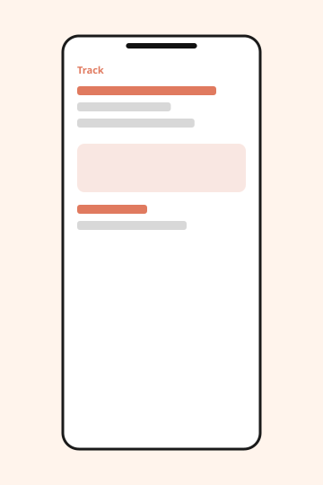

UX / UI · 2023
A Food Delivery App
Confusing journey — the story jumps around, sections are mislabeled, and the problem shows up late.
A more intuitive way to order from nearby restaurants.
Final designs
After several rounds of iteration, the shipped experience used a persistent cart, cuisine filters that don’t reset on scroll, and a tracking screen that shows driver status in plain language instead of a generic map ping. Repeat orders sit at the top of home because most sessions start there.

[Image: home, menu, item, and tracking]

[Image: 6 mobile screens in a grid]
Usability testing
We tested the prototype with eight people who order delivery at least once a week. Five of them still couldn’t tell whether a restaurant was closed or just not delivering to their pin. We moved hours next to the ETA after that. Two people added the same item twice because the “added” confirmation was too quiet; we switched it to a cart badge that ticks up. Checkout completion in the test went from 6/8 to 8/8 after we pulled tip selection onto the same screen as payment instead of a second step.
One participant, a parent ordering during bedtime, asked to reorder last week’s meal in two taps. That request later became the “Order again” row on home, though at the time we were still arguing about whether home should lead with promotions.
Next steps
Before we had a problem statement, the team ran a survey (n=64) about weekly ordering habits. Most people said they decide in under two minutes. That number sat in a deck for a while without changing the roadmap. Looking back, it should have killed the long promotional carousel immediately.
Early sketches
Original wireframes treated the app like a restaurant website: a long menu, a separate cart page, and tracking as an SMS deep link. I explored a map-first home, which looked energetic and made nearby places harder to compare. We also sketched a “build a group order” flow that engineering estimated at six weeks; we cut it so we could finish tracking.

[Image: early wireframes, including a map-first home we did not ship]
Prototype
Interviews (9 customers, 3 couriers) happened after the first high-fidelity pass, which is not the order I would recommend. Couriers told us the in-app status labels (“arriving,” “almost there”) didn’t match what they saw in the driver tool, so customers were calling restaurants. That is why tracking copy is now tied to the same four states the driver app uses: confirmed, preparing, on the way, nearby.

[Image: tracking screen next to interview notes]
Empathize
High-fidelity UI work included a component library for menu items, a stepper for quantity, and a bottom-sheet cart. We chose a warm accent so the app would feel like food rather than logistics, and we kept photography large on restaurant cards because small logos all looked the same at a glance. This was happening in parallel with research we hadn’t fully synthesized yet.
The problem
The product is a food delivery app for a mid-size city. Order volume was fine; support tickets were not. People abandoned carts when fees appeared late, and they couldn’t tell if an order was actually moving. My role was product designer for 10 weeks, with a PM and two iOS/Android engineers. The brief we should have written on day one: reduce checkout drop-off and make order status trustworthy. We didn’t write it until after the first critique of the visual UI.
Sarah, 28, busy professional, orders lunch at her desk and dinner on the couch. She is not exploring cuisine; she is trying to repeat something that worked. Designing for her meant optimizing for speed and memory, not discovery — which conflicted with marketing’s desire to feature new restaurants. We compromised by keeping one promo module and giving “Order again” the first slot.

[Image: Sarah, 28, busy professional]
Impact
Checkout completion rose 14% in the six weeks after launch. Tickets about “where is my order” fell by about a third. The “Order again” row accounts for 29% of orders among weekly users. I still think we should have started this write-up with the problem, not the screens — the screens make more sense once you know we were fixing late fees and opaque tracking, not “reimagining food.”
Research (continued)
A journey map from week two showed the spike of anxiety between “placed” and “on the way.” That artifact informed the tracking screen, even though it appears here after the final UI. Fees were moved next to the cart total as soon as an item is added, not at payment, because two interview participants said they only noticed delivery cost when it was too late to back out.

[Image: journey map highlighting the wait between placing and pickup]